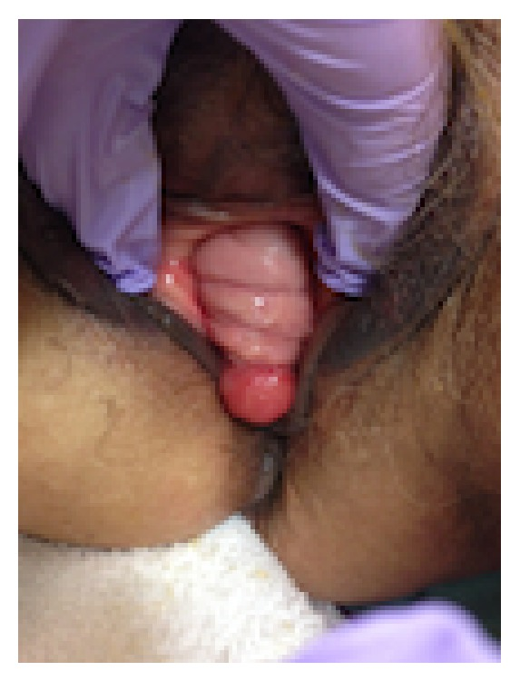

Página 13 · Prolapsos / distopia genital
A Lurdinha decodificada — e a ponte para o próximo caso
O que os sete números da Lurdinha entregam
- traduzir os sete números da Lurdinha;
- cravar o compartimento;
- definir a conduta dela;
- fechar a distopia e abrir o próximo caso.
- Aa+3
- Ba+5
- Ap−3
- Bp−3
- C−6
- D−7
- CVT7
Os sete números, agora legíveis
De volta ao enigma que abriu tudo: Aa +3, Ba +5, Ap −3, Bp −3, C −6, D −7, CVT 7. Aplicando o que a régua ensinou, cada número fala. Aa +3 e Ba +5 → a parede anterior está 3 e 5 cm para fora da carúncula himenal = cistocele acentuada. Ap −3 e Bp −3 → a parede posterior está em −3 = normal, sem retocele. C −6 → o colo/apical está bem para dentro = apical suportado (sem prolapso uterino). D −7 → tem ponto D = tem colo (coerente com uma paciente G5P5, útero presente). E D − C = −7 − (−6) = −1 → o módulo é 1 cm < 4 → não é alongamento, o colo dela é normal.
O compartimento: anterior isolado, apical e posterior poupados
Somando a leitura: o que desceu na Lurdinha está só na frente. A parede anterior acentuadamente para fora, a posterior normal, o ápice suportado, o colo de comprimento normal. O diagnóstico é prolapso de parede vaginal anterior acentuado (cistocele avançada), com apical e posterior poupados — exatamente a primeira leitura que o princípio do sinal já dava na abertura, agora confirmada ponto a ponto.
O estágio na fronteira III↔IV — mas quem decide a conduta é o compartimento
Pelo cálculo da régua: o ponto mais distal é Ba +5, e o corte do estágio 4 é CVT − 2 = 7 − 2 = 5. Como +5 ≥ 5, cai no estágio 4 — exatamente na borda III↔IV (o ponto de fronteira pertence ao IV pela regra estrita). Vale a honestidade: é um prolapso anterior isolado com ápice alto (C −6), não uma procidência total — há tensão entre a regra numérica (que crava IV pelo ponto mais distal) e o gestalt clínico. Para banca, vale a regra numérica → estágio 4 (ou “III/IV na fronteira”). Mas o ponto que não muda: quem decide a conduta é o compartimento (anterior isolado), não o número exato do estágio.
A conduta da Lurdinha: colpoperineoplastia anterior, sem histerectomia
Cravado o compartimento, a conduta é direta: colporrafia / colpoperineoplastia anterior + correção da fáscia pubovesicocervical, mais a correção do períneo (a rotura de 2º grau que ficou pendente desde o começo). E o que não se faz: como o apical está bom (C −6, bem suportado), não precisa de histerectomia nem de sacrocolpopexia — corrige-se apenas o compartimento que cedeu. Retirar o útero ou fixar a cúpula numa paciente cujo ápice está no lugar seria operar o que não está doente. A Lurdinha sai resolvida: cistocele avançada tratada pela frente, períneo refeito, útero preservado.
A distopia é objetiva — e a ponte para o próximo caso
O fecho amarra a lente do bloco: na distopia, diagnosticou, trata — a conduta é direta, sai por compartimento. O que diferencia na prova não é a decisão terapêutica, é a quantificação (POP-Q), a régua que gradua e escolhe o degrau. Resolvida a Lurdinha, abre-se um novo caso — a Rafaela, uma paciente distinta, jovem, com sangramento — que leva a discussão para o ciclo menstrual. É outra história, outro fio; a Lurdinha, essa, fecha aqui, decodificada por inteiro.
Caso 1 · dona Lurdinha — resolvida
Corredor fechado- Sete números
- Aa +3 · Ba +5 · Ap −3 · Bp −3 · C −6 · D −7 · CVT 7
- Leitura
- anterior acentuado para fora · posterior/apical poupados · |D − C| = 1, não é alongamento
- Diagnóstico
- prolapso de parede vaginal anterior acentuado (cistocele avançada) · estágio 4 na fronteira III↔IV, mas a conduta é pelo compartimento anterior isolado
- Conduta
- colpoperineoplastia anterior + fáscia pubovesicocervical + correção do períneo — sem histerectomia nem sacrocolpopexia

Exame de prolapso de parede vaginal anterior (cistocele) exteriorizada pelo introito — o achado que os números Aa +3 / Ba +5 da Lurdinha descrevem. Nesta foto coexiste, atrás, uma fístula retovestibular (outro caso) — o cueing e a leitura ficam só na parede anterior.
Grechukhina O et al. Case Reports in Obstetrics and Gynecology. 2014;2014:578048 (Fig. 2), via PubMed Central. Licenciado sob CC BY. Fonte: PMC.
real de achado/síntese — cistocele anterior (fístula posterior coexiste; leitura só na anterior)Quiz — fixação
Dona Lurdinha, 60a, G5P5: Aa +3, Ba +5, Ap −3, Bp −3, C −6, D −7, CVT 7. O diagnóstico de compartimento e a conduta são:
- B — a virada. Anteriores positivos (cistocele), posteriores em −3 (normais), ápice em −6 (suportado), D presente (tem colo), |D − C| = 1 (não alongamento) → anterior isolado → corrige-se só a frente + o períneo, poupando o útero.
- A. o ápice em C −6 está no lugar — histerectomizar seria operar o que não está doente.
- C. há ponto D → há colo → não é cúpula (que é de quem não tem útero).
- D. |D − C| = 1 < 4 exclui alongamento.
- Por que cair. o estágio numérico é 4 (borda III↔IV), e “estágio 4” evoca “cirurgia radical” — mas quem escolhe a conduta é o compartimento, não o número.
Sobre o estágio da Lurdinha (Ba +5, CVT 7), é correto:
- B — a virada. Corte do estágio 4 = CVT − 2 = 5; +5 ≥ 5 → estágio 4, na borda (o ponto de fronteira pertence ao IV). E, esteja em III ou IV, a conduta é a mesma — decidida pelo compartimento.
- A. o estágio 4 não exige alcançar o CVT (“faltando 2 já conta”) — parar no 3 ignora CVT − 2.
- C. +5 está muito além da faixa −1 a +1 do estágio 2.
- D. o corpo perineal não entra no estadiamento ordinal (que sai do ponto mais distal).
- Por que cair. achar que “estágio 4 = igual ao CVT” é o erro que o cálculo CVT − 2 corrige.
Por que a Lurdinha não precisa de histerectomia nem de sacrocolpopexia?
- B — a virada. Ápice e parede posterior poupados → corrige-se apenas o compartimento anterior; não há útero descendo (dispensa histerectomia) nem cúpula a fixar (dispensa sacrocolpopexia).
- A. a decisão é anatômica, não por recusa — o enunciado é sobre indicação.
- C. falso: a cistocele acentuada dela é cirúrgica (colporrafia anterior) — o que se dispensa é a cirurgia do ápice.
- D. o estágio 4 não contraindica cirurgia; ele indica corrigir — só que pelo compartimento certo.
- Por que cair. “estágio 4” soa como “grave demais”, mas grave pede correção dirigida, não abstenção.
Fechada a distopia da dona Lurdinha por inteiro, um novo caso entra em cena — a Rafaela, jovem, com sangramento — abrindo a discussão do ciclo menstrual. Paciente distinta, história nova.